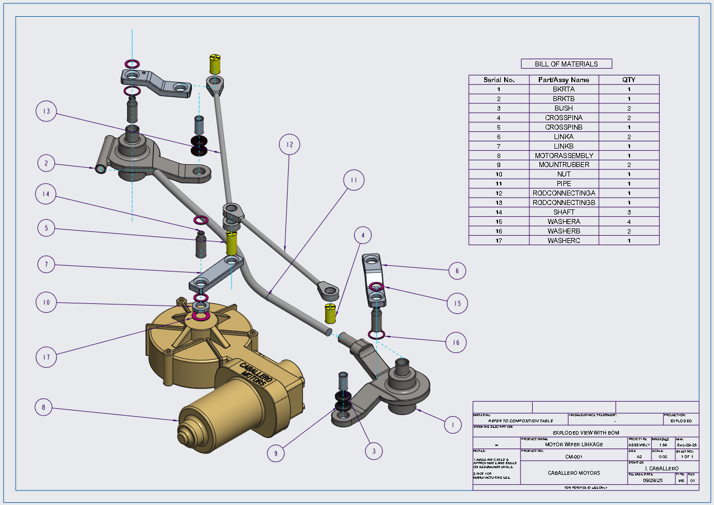

Concept‑level pressure vessel design with structural evaluation of nozzle interfaces.
Overview
This project presents a concept‑level buffer tank design developed to study shell sizing, nozzle geometry, and structural behavior under internal pressure using static analysis. The geometry was reconstructed from publicly available reference images of generic industrial buffer tanks for concept‑level evaluation.
Objective
Evaluate structural behavior and safety margin under assumed operating and maximum internal pressure, with emphasis on identifying governing regions.
Key Parameters
Material: ASTM A36 Steel
Shell thickness: 6 mm
Operating pressure: 0.2 MPa
Maximum pressure: 0.6 MPa
Evaluation: von Mises stress & yield‑based FoS
Structural Results
Comparison of operating (0.2 MPa) and maximum internal pressure (0.6 MPa) cases. von Mises stress and yield‑based Factor of Safety indicate nozzle–shell junctions govern structural response, with minimum FoS ≈ 2.4 at maximum pressure.
Static structural analysis results comparing operating (0.2 MPa) and maximum (0.6 MPa)
internal pressure cases.
Image gallery

Video
This clip demonstrates the modeled kinematic behavior of the wiper linkage assembly, showing coordinated motion between the motor crank and output linkages across the full sweep range.


.jpg)